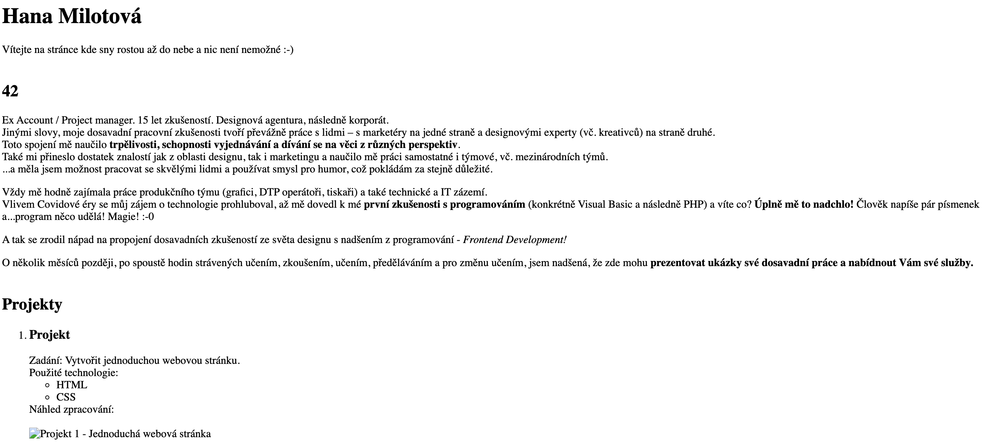
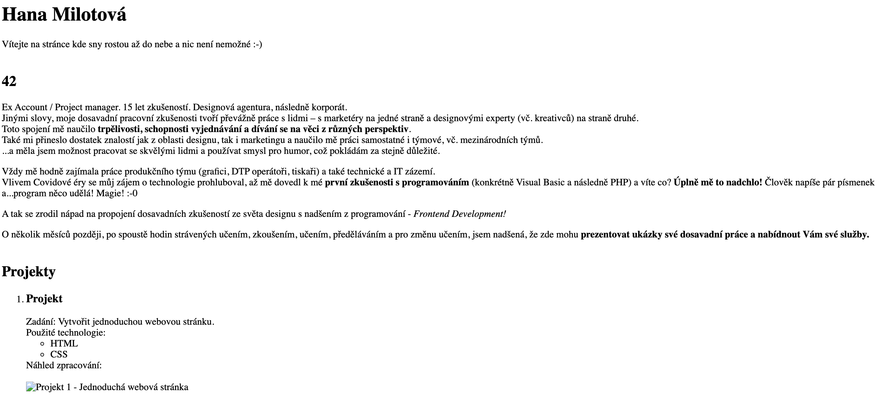
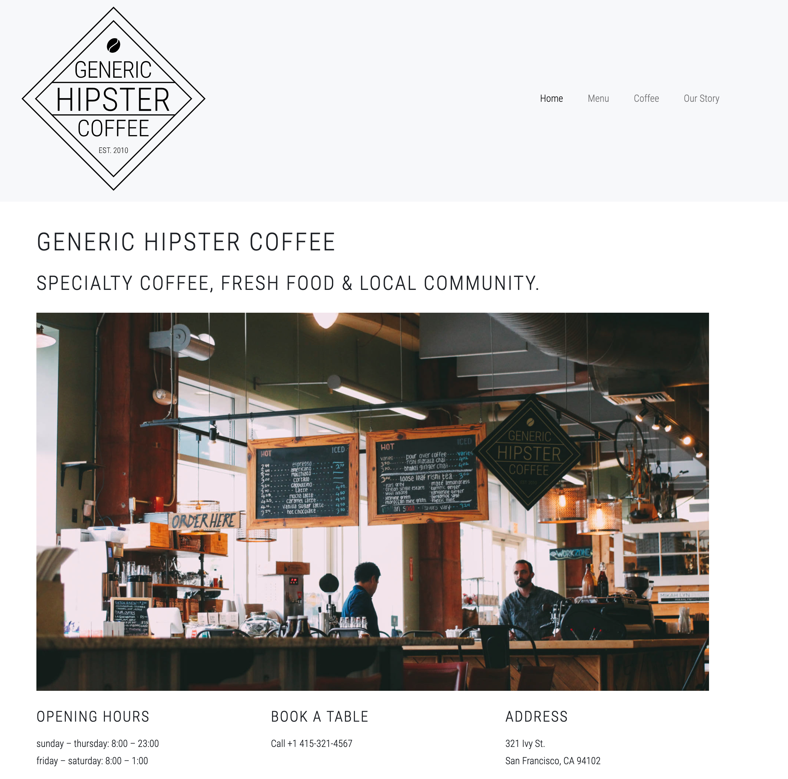
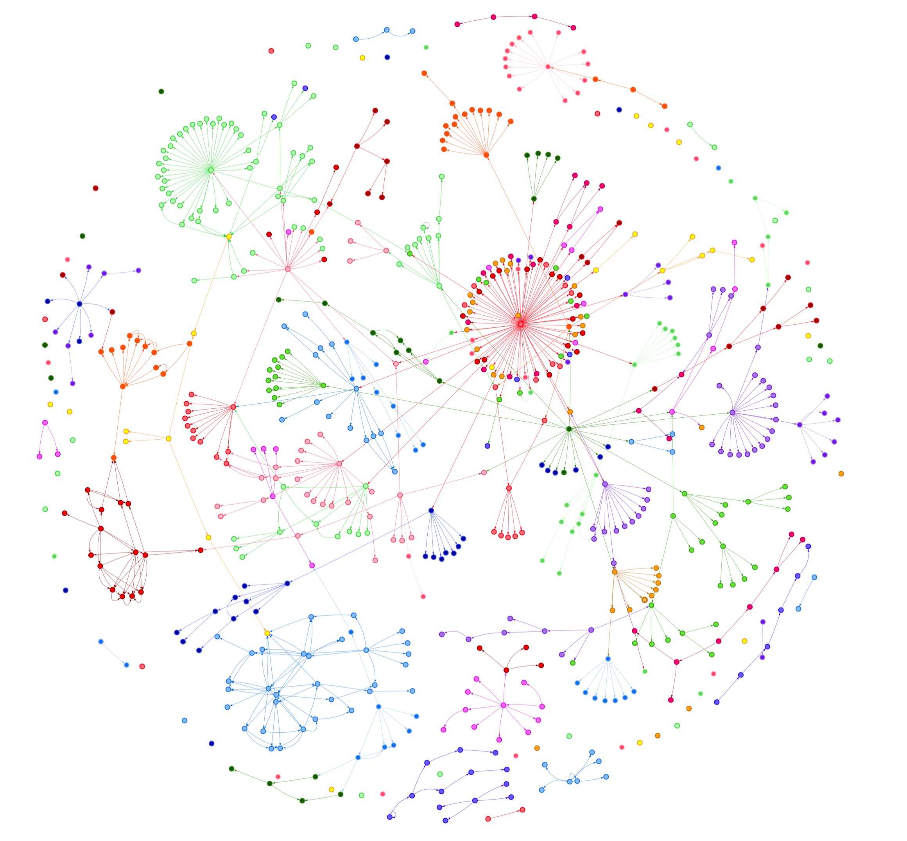

Projekt č. 1
Type
statická stránka
Stack
HTML, CSS
I write mostly web dev tutorials and UI/UX observational pieces. Blogging has been a fun outlet to explore those areas, while also helping me better articulate my thoughts/writing.

Ex
Account / Project manager v oblasti obalového designu.
Designová agentura, následně korporát.
15 let zkušeností.
Jinými slovy, moje dosavadní pracovní zkušenosti tvoří převážně
práce s lidmi – s marketéry na jedné straně a designovými
experty (vč. kreativců) na straně druhé.
Toto spojení mě naučilo
trpělivosti, schopnosti
vyjednávání a dívání se na věci z
různých perspektiv.
Také mi přineslo dostatek znalostí jak z oblasti
designu, tak i
marketingu
a naučilo mě práci samostatné i týmové, vč. mezinárodních týmů.
Měla jsem možnost pracovat se skvělými lidmi a používat i svůj
smysl pro humor, což pokládám za stejně důležité.
Vždy mě hodně zajímala práce produkčního týmu (grafici, DTP
operátoři, tiskaři) a také technické a IT zázemí.
Vlivem Covidové éry se můj zájem o technologie prohluboval, až
mě dovedl k mé
první zkušenosti s programováním
(konkrétně Visual Basic a následně PHP) a víte co?
Úplně mě to nadchlo! Člověk napíše pár písmenek a…
program něco udělá! Magie! :-0
A tak se zrodil nápad na propojení dosavadních zkušeností ze světa designu s nadšením z programování - Frontend Development!
O několik měsíců později, po spoustě hodin strávených učením, zkoušením, učením, předěláváním a pro změnu učením, jsem nadšená, že zde mohu prezentovat ukázky své práce a nabídnout Vám své služby .
statická stránka
HTML, CSS
I write mostly web dev tutorials and UI/UX observational pieces. Blogging has been a fun outlet to explore those areas, while also helping me better articulate my thoughts/writing.
statická stránka
HTML, CSS
I write mostly web dev tutorials and UI/UX observational pieces. Blogging has been a fun outlet to explore those areas, while also helping me better articulate my thoughts/writing.
statická stránka
HTML, CSS
I write mostly web dev tutorials and UI/UX observational pieces. Blogging has been a fun outlet to explore those areas, while also helping me better articulate my thoughts/writing.
